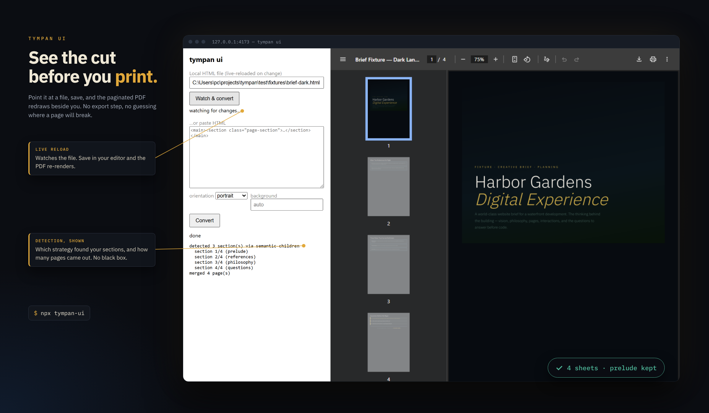

Deterministic bytes
Same input, same bytes — fixed timestamps, content-derived IDs. Your CI can diff PDFs.
HTML → PDF · COUNTED, NOT HOPED
One section, one page.
Verified on every run.
$ npx tympan deck.html
Read the spec
Y O U R H T M L
detected 3 section(s) · merged 1 page(s)
MEASURED, BOTH MODES
The same deck printed two ways. Section mode leaves the page half empty; --flow keeps text with its headings and fills the sheet. Sweep the divider to see what that does to the stack.
SECTION MODE
10 sheets · 64% fill · 424 KB · 6.6 s
8 sheets · 81% fill · 132 KB · 2.2 s
Numbers from the subscription-plans deck in docs/BENCHMARKS.md — measured, not marketing.
copied — now paste itT Y M P A N U I
Point it at a file, save, and the paginated PDF redraws beside you. No export step, no guessing where a page will break.
LIVE RELOAD
Watches the file. Save in your editor and the PDF re-renders.
DETECTION, SHOWN
Which strategy found your sections, and how many pages came out. No black box.
$ npx tympan-ui

$
npx tympan deck.html --json
npx tympan lint report.pdf
npx tympan test --diff
Same input, same bytes — fixed timestamps, content-derived IDs. Your CI can diff PDFs.
file:// reads and private networks are blocked. Hostile documents cannot reach your LAN.
Every run checks its own output: probes, page counts, byte matches. Failures are loud.
Fill, stranded headings, broken assets — 13 rules that name the cause, not the symptom.